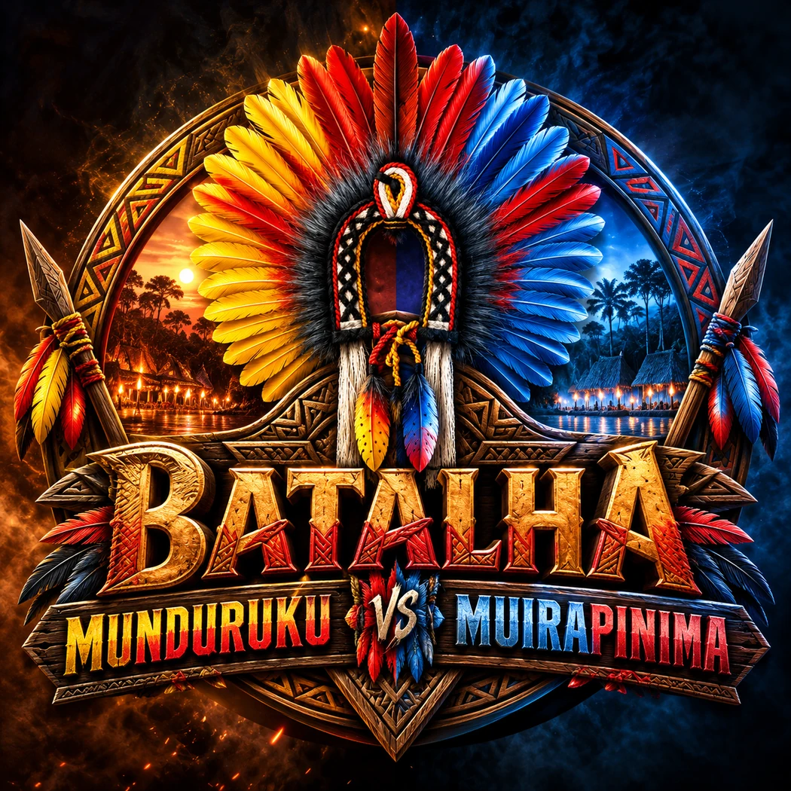

◆ INSPIRADO NO FESTRIBAL JURUTIENSE ◆

Batalha Munduruku vs Muirapinima
Duas tribos. Duas arenas. Um mundo para explorar.
Cadastre seu apelido para começar.
✦MUNDURUKU—
VS
✦MUIRAPINIMA—
Cadastros online por tribo • conectar Supabase para exibir
Projeto independente, sem vínculo oficial com o Festribal ou com comunidades indígenas. Personagens e poderes de fantasia são ficcionais.